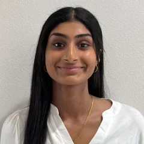

UCF · EGN 4641C Engineering Entrepreneurship · Fall 2026
Help us learn how live events really get run, and what would make it easier.
We’re UCF students studying how event teams take a show from first plan to final load-out: who does what, when, and how it all stays on track. 20 minutes, one recent event, your perspective.
Help with our researchJulian
B.S. Computer Science

Medha
B.S. Computer Engineering
Vardhan
M.S. Computer Science
Beenish
B.S. Computer Science
Bindhya
B.S. Computer Science
01What we’re studying
- The question
- Behind every event are dozens of tasks, deadlines, people, and vendors. How do operations teams keep it all moving, and where does it get hard?
- Why we’re asking you
- Our course requires us to learn from practitioners before we propose anything. We’re engineers, not event professionals, so we’re starting by listening.
- What we do with it
- We compare how different venues, promoters, and organizations run their events to find patterns. Those patterns shape our semester project.
What the conversation looks like
- A 20-minute video call with two of us.
- You walk us through one recent event, from the moment it was booked to the day after.
- We ask how your team plans and divides the work, how you track progress and handle changes, and what takes more time or effort than it should.
- We’re also curious what you use day to day, whether that’s spreadsheets, group texts, email, whiteboards, or software.
- No prep needed. Just your experience.
Willing to talk with us?
If you plan, coordinate, or run events, whether as an operations manager, production manager, event coordinator, or someone who wears every hat, one conversation helps us understand the work better than any textbook could.